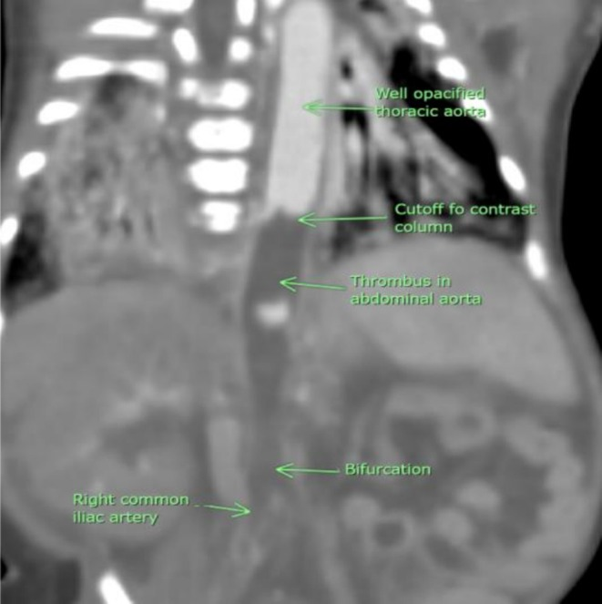
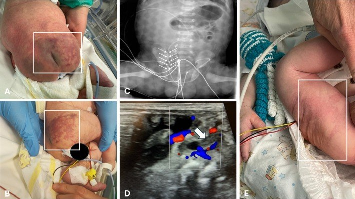
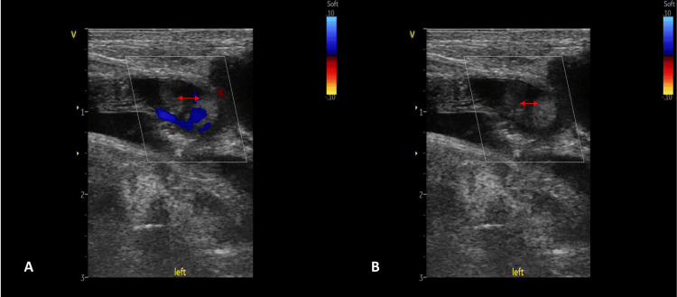

6113 — Huyết khối động mạch chủ ở sơ sinh sau catheter động mạch rốn: chẩn đoán bằng Doppler, và khi nào chỉ kháng đông – khi nào phải tiêu sợi huyết
Tags: pattern:huyet-khoi-dong-mach pattern:thieu-mau-chi pattern:hoai-tu pattern:vo-nieu vung:dong-mach-chu vung:chi-duoi vung:than protocol:sieu-am-Doppler protocol:CTA incidentaloma:khong
Mức chắc chắn (certainty): tổng hợp y văn (literature synthesis) — ghép ca nguyên văn huyết khối động mạch chủ bụng sau catheter rốn có phân tích điều trị (Cureus 2024, PMC11246179), ca huyết khối động mạch chậu trong ở trẻ đang hạ thân nhiệt điều trị (Australas J Ultrasound Med 2025, PMC12461416), hai ca huyết khối động mạch chủ "tự phát" do mất nước tăng natri với CTA đầy đủ (Clinical Case Reports 2025, PMC12318815), ca huyết khối động mạch đùi–thận ở trẻ sinh đôi có thoát vị hoành (Cureus 2025, PMC12413998), đoàn hệ 235 trẻ đặt catheter động mạch rốn vị trí cực thấp (ultralow) (J Vasc Access 2026, PMC13380652) và tổng quan có bảng khuyến cáo ASH/ISTH về huyết khối sơ sinh (J Clin Med 2026, PMC13513004).
Câu hỏi thực hành: sơ sinh 34 tuần, ngày thứ 7 sau đặt catheter động mạch rốn (UAC) vì suy hô hấp. Điều dưỡng gọi vì hai chi dưới lạnh, tím, không bắt được mạch bẹn, vùng mông phải có mảng da tím loang; nước tiểu 0,4 mL/kg/giờ, huyết áp 78/46 mmHg (cao hơn trước). Câu hỏi: huyết khối ở đâu? có phải chụp CT không? kháng đông đủ chưa hay phải tiêu sợi huyết? catheter xử lý thế nào? Bài chốt ba quyết định của bác sĩ CĐHA sơ sinh: (1) nhận ra "mất mạch bẹn + chi lạnh + vô niệu" là tắc động mạch chủ–chậu, không phải sốc; (2) Doppler tại giường là đầu tay, CTA chỉ khi cần xác định mức lan/nhánh; (3) phân tầng "đe dọa chi/cơ quan" để chọn kháng đông hay tiêu sợi huyết. Nối 3045 – Catheter rốn ở sơ sinh (UVC/UAC), 6111 – Huyết khối tĩnh mạch thận sơ sinh, 622 – Tắc ruột sơ sinh.
1. Tổng quan bệnh học – cơ chế hình ảnh: vì sao một catheter 3 mm lại làm tắc cả động mạch chủ
- Sinh lý bệnh (tam giác Virchow ở sơ sinh): (1) tổn thương nội mạc do catheter cứng cọ vào thành mạch; (2) dòng chảy chậm/ứ vì catheter chiếm gần hết lòng động mạch rốn–chậu và cản dòng quanh đầu catheter; (3) tăng đông "sinh lý" — trẻ sơ sinh có nồng độ antithrombin, protein C, protein S thấp và hoạt tính tiêu sợi huyết giảm, nên khi có thêm catheter thì huyết khối hình thành ngay tại đầu catheter rồi lan ngược/xuôi. Bài tổng quan ASH mô tả đúng là "cân bằng cầm máu phát triển" của trẻ sơ sinh, và catheter là yếu tố nguy cơ có thể sửa được lớn nhất (J Clin Med 2026, PMC13513004).
- TẠI SAO huyết khối lại "chọn" động mạch chủ bụng: đầu catheter UAC vị trí cao nằm ở T6–T9, tức ngay trên hoặc ngang các lỗ động mạch thận (L1) và động mạch mạc treo tràng trên (L1). Huyết khối mọc quanh đầu catheter tại đó sẽ che lỗ nhánh tạng trước khi lan xuống chạc ba chậu — vì vậy cùng một huyết khối có thể gây thiếu máu chi dưới + suy thận + tăng huyết áp + hoại tử ruột. Ngược lại, UAC vị trí thấp (L3–L4) nằm dưới các nhánh tạng, nên biến chứng chủ yếu là chi dưới. (Vị trí chuẩn và bảng đối chiếu: xem 3045.)
- TẠI SAO huyết khối thường im lặng: huyết khối không tắc hoàn toàn vẫn cho dòng quanh rìa đủ nuôi chi ở trẻ nằm yên, nên 44% trẻ có UAC vị trí cao có huyết khối động mạch chủ/động mạch chậu mà không có triệu chứng (so sánh trong J Vasc Access 2026, PMC13380652). Vì vậy "không có triệu chứng" không phải bằng chứng loại trừ — đây là lý do các nghiên cứu sàng lọc bằng Doppler tìm ra tỷ lệ cao hơn nhiều so với tỷ lệ biến chứng lâm sàng.
- Ngưỡng định lượng – tần suất (theo phương pháp phát hiện):
- Huyết khối động mạch ở trẻ có UAC: ~8–20%; gộp toàn bộ catheter động mạch ở sơ sinh: 21% (tổng quan có hệ thống dẫn trong J Clin Med 2026, PMC13513004).
- Gộp theo loại catheter rốn: UAC 8,2% (KTC 95%: 1,91–18,20), UVC 6,5% (2,28–12,61) — tức huyết khối động mạch không hiếm hơn huyết khối tĩnh mạch là bao (J Clin Med 2026, PMC13513004).
- Vị trí cực thấp (ultralow – đầu catheter ở ngã ba động mạch rốn và động mạch chậu trong, đặt dưới hướng dẫn siêu âm): 0/235 trẻ có huyết khối, biến cố khác 4,8% (tụt catheter 2,1%, chảy máu kéo dài sau rút 2,1%, nhiễm khuẩn huyết liên quan catheter 0,44%) (J Vasc Access 2026, PMC13380652). Con số này không chứng minh vị trí thấp tốt hơn (không randomized, theo dõi ngắn), nhưng cho thấy chiến lược "catheter ngắn, không đi qua lòng động mạch chủ" là hướng giảm huyết khối.
- Heparin dự phòng trong lòng catheter (0,25–1 U/mL; 25–200 U/kg/ngày) kéo dài thời gian thông catheter nhưng KHÔNG giảm tỷ lệ huyết khối — đừng dùng nó để "yên tâm" (J Clin Med 2026, PMC13513004).
- TẠI SAO hình ảnh trông như vậy:
- Siêu âm B-mode: huyết khối cấp là khối hồi âm thấp–trung bình lấp lòng mạch, có thể đồng hồi âm với máu chảy chậm → dễ bỏ sót nếu chỉ nhìn 2D. Đây là lý do bắt buộc Doppler màu: vùng không có tín hiệu màu trong lòng mạch, bờ tín hiệu lõm vào ("meniscus") là dấu hiệu gián tiếp mạnh.
- Theo thời gian: huyết khối cũ tăng hồi âm, co nhỏ, có thể vôi hóa và tái thông một phần — nên hình ảnh thay đổi theo tuần, không phải "một hình ảnh cố định".
- CTA: huyết khối là khuyết thuốc (filling defect)/cột thuốc bị cắt (cutoff) trong lòng động mạch; phần xa mờ đi và xuất hiện tuần hoàn bàng hệ. Trong ca mất nước tăng natri, CTA cho thấy cột thuốc bị cắt ở đoạn cuối động mạch chủ ngực xuống/đầu động mạch chủ bụng, hai thận tưới máu kém và mạng bàng hệ dưới thận (Clinical Case Reports 2025, PMC12318815, Figure 3).

CTA bụng (dựng coronal) ở sơ sinh 14 ngày bị mất nước tăng natri: động mạch chủ ngực ngấm thuốc tốt, rồi cột thuốc bị cắt (cutoff) ngay trên đoạn bụng; huyết khối lấp lòng động mạch chủ bụng; hai thận tưới máu rất kém, thận trái còn mờ hơn; phía dưới có bàng hệ và chạc ba chậu còn thấy. Đây là "chữ ký" của huyết khối động mạch chủ: cutoff + giảm tưới máu tạng + bàng hệ. Nguồn: Clinical Case Reports 2025 (PMC12318815), CC BY-NC-ND 4.0, nguyên bản (giữ nguyên nhãn của tác giả).2. Mẫu hình + chẩn đoán phân biệt theo vị trí huyết khối (gamut)
- Gamut theo vị trí (quyết định triệu chứng):
- Dưới động mạch thận (ĐM chủ bụng thấp → chạc ba → ĐM chậu): mất/giảm mạch bẹn hai bên, chi lạnh tái, chậm làm đầy mao mạch, đau/không cử động, hoại tử đầu chi. Đây là thể hay gặp nhất và là thể của ca Cureus 2024 (huyết khối 1/3 dưới ĐM chủ bụng lan vào hai ĐM chậu ngoài).
- Ngang/trên động mạch thận: vô niệu, tiểu máu, tăng huyết áp do mạch máu thận (renovascular), suy thận cấp; thận có thể nhồi máu toàn bộ (ca sinh đôi 34 tuần, PMC12413998: huyết khối ĐM chậu–đùi và ĐM thận, nhồi máu thận lan rộng, PSV ĐM thận trái 21,77 cm/s kèm dòng tâm trương đảo).
- Động mạch mạc treo tràng trên: bụng chướng, viêm ruột hoại tử (NEC) — ca UAC gây NEC đã được báo cáo (World J Clin Cases 2021, PMC8362557), và đây là lý do không được dừng ở chẩn đoán NEC khi trẻ có UAC.
- Động mạch chậu trong: mông/vùng hông tím loang, loét, hoại tử da — ca điển hình: trẻ đủ tháng hạ thân nhiệt điều trị, UAC lạc vào động mạch chậu trong phải, xuất hiện mảng tím ở mông và hông phải, siêu âm Doppler 6 giờ sau rút catheter thấy huyết khối trong ĐM chậu trong phải, điều trị UFH 10 IU/kg/giờ, tổn thương da hết trong 36 giờ, dòng chảy tái lập sau 48 giờ (Australas J Ultrasound Med 2025, PMC12461416).
- Động mạch tủy sống (nhánh ĐM chủ): liệt mềm/giảm vận động chi dưới — hiếm nhưng là biến chứng được nêu trong tổng quan (PMC13513004).
- Gamut theo bối cảnh:
- Do catheter (đa số): UAC, catheter ĐM đùi (sau thông tim), catheter ĐM quay.
- "Tự phát" ở sơ sinh: mất nước tăng natri do bú kém (đặc biệt tuần 2–3), nhiễm khuẩn huyết, đa hồng cầu, mẹ đái tháo đường, bệnh tim bẩm sinh, giảm thể tích/tăng đông.
- Do bệnh lý mạch: hẹp eo động mạch chủ (coarctation), loạn sản mạch, hội chứng Loeys–Dietz (không nên nhầm với huyết khối).
- Gamut hình ảnh của "chi dưới lạnh/tím ở sơ sinh": huyết khối ĐM chủ–chậu · coarctation (mạch yếu nhưng có từ trước, không đau/hoại tử) · co thắt mạch do lạnh/đau (mạch yếu thoáng qua, ấm lại khi ủ ấm) · sốc nhiễm khuẩn (chi lạnh nhưng mạch bẹn còn, có dấu hiệu tuần hoàn kém toàn thân) · huyết khối tĩnh mạch (chi sưng to, không mất mạch) · huyết khối do ổ nhiễm trùng từ catheter (sốt, cấy máu dương).
3. Bảng so sánh phân biệt (ma trận đối chiếu)
| Thực thể (entity) | Hình ảnh điển hình | Chốt vào (rule-in) | Chốt loại (rule-out) | Gợi ý xác nhận |
|---|---|---|---|---|
| Huyết khối ĐM chủ do UAC | Khối hồi âm trong lòng ĐM chủ bụng, mất tín hiệu màu, bờ tín hiệu lõm; CTA: cutoff/filling defect + bàng hệ | Mất tín hiệu màu trong lòng mạch + tiền sử UAC + chi lạnh/mất mạch bẹn | Có dòng màu đầy đủ trong lòng ĐM chủ và ĐM chậu, mạch bẹn đều → không phải huyết khối | Doppler tại giường; CTA khi cần mức lan/nhánh tạng |
| Huyết khối ĐM chậu trong (UAC lạc vị trí) | Đầu catheter lệch sang ĐM chậu trong; huyết khối trong ĐM chậu trong; da mông/hông tím | Catheter lạc + mảng tím mông/hông cùng bên | Catheter đúng trục, da bình thường → không phải | POCUS xác định catheter; Doppler ĐM chậu trong |
| Coarctation (hẹp eo ĐM chủ) | Hẹp eo sau ĐM dưới đòn trái; mạch bẹn yếu hai bên từ lúc sinh, không đau; X-quang: dấu "3", khuyết sườn | Mạch yếu có từ trước + chênh HA tay/chân + không có huyết khối trong lòng | Có khối trong lòng mạch, mạch yếu mới xuất hiện sau đặt catheter | Siêu âm tim + Doppler eo; CTA/MRA khi cần |
| Huyết khối ĐM thận | Thận nhỏ/không to, mất tín hiệu động mạch, RI không đo được; vỏ giảm tín hiệu | Mất dòng động mạch thận + vô niệu | Có dòng ĐM thận, thận to → huyết khối tĩnh mạch (bài 6111) | Doppler thận; CTA |
| Huyết khối tĩnh mạch thận (RVT) | Thận to, mất dòng tĩnh mạch, RI tăng (0,88), huyết khối trong TM thận/IVC | Thận to + mất dòng tĩnh mạch | Thận không to, mất dòng động mạch → huyết khối động mạch | Doppler; CTV (bài 6111) |
| Co thắt mạch do lạnh/đau | Mạch yếu thoáng qua, da ấm lại sau ủ ấm, Doppler bình thường | Hồi phục trong 15–30 phút khi ủ ấm | Không hồi phục, có khối trong lòng → huyết khối | Ủ ấm + Doppler lại |
| Sốc nhiễm khuẩn | Chi lạnh, CRT kéo dài toàn thân, mạch bẹn còn, HA tụt, lactat cao | Sốt + tụt HA + lactat cao + mạch bẹn còn | Mất mạch bẹn khu trú + HA tăng → huyết khối | Cấy máu, lactat, Doppler |

Ca trẻ đủ tháng hạ thân nhiệt điều trị, UAC lạc vào động mạch chậu trong phải: (A, B) mảng da tím loang vùng mông/hông phải; (C) X-quang bụng cho thấy catheter đi lệch; (D) Doppler màu: khối trong lòng mạch (mũi tên trắng) không có tín hiệu màu, dòng chỉ đi quanh rìa; (E) tổn thương da hồi phục sau rút catheter. Đây là ví dụ "huyết khối nhỏ nhưng đúng vị trí" — nếu chỉ nhìn X-quang sẽ bỏ sót. Nguồn: Australas J Ultrasound Med 2025 (PMC12461416), CC BY 4.0, nguyên bản.4. Protocol chụp + ngưỡng xử trí
- Siêu âm Doppler là đầu tay, tại giường, không cản quang, không bức xạ: đầu dò linear 7–12 MHz (sơ sinh rất nông), khảo sát ĐM chủ bụng từ trên ĐM thận → chạc ba → hai ĐM chậu → ĐM đùi chung, so sánh hai bên. Ghi tối thiểu: đường kính lòng mạch, vị trí và chiều dài huyết khối, có/không tín hiệu màu, phổ Doppler (PSV, có đảo dòng tâm trương không). Ca có huyết khối thận ghi PSV 21,77 cm/s và dòng tâm trương đảo (PMC12413998) — dòng tâm trương đảo là dấu hiệu tắc nặng, không phải "khó đo".
- Hạn chế của siêu âm phải nói rõ trong phiếu: khí ruột, phân su, vết mổ, đầu dò ấn lún có thể làm mất tín hiệu màu giả; và huyết khối đồng hồi âm có thể không thấy trên 2D. Vì vậy một lần siêu âm bình thường không loại trừ nếu lâm sàng mạnh — lặp lại sau 6–24 giờ (đúng như ca PMC12461416: siêu âm 6 giờ sau rút catheter mới thấy huyết khối).
- CTA bụng–chậu có cản quang: chỉ định khi (1) siêu âm không kết luận; (2) cần xác định mức lan lên ĐM thận/ĐM mạc treo tràng trên; (3) cân nhắc can thiệp. Ở sơ sinh dùng liều i-ốt thấp theo cân nặng, kVp thấp, giới hạn trường chụp từ ĐM chủ ngực dưới đến chạc ba (ALARA); không chụp lặp lại nhiều lần — thay bằng Doppler.
- Siêu âm tim (bắt buộc): tìm huyết khối trong nhĩ phải/ống động mạch, đánh giá chức năng thất và tăng áp phổi — huyết khối ĐM chủ có thể kèm huyết khối tĩnh mạch rốn lan lên nhĩ (xem 3045).
- Xét nghiệm hỗ trợ, không chẩn đoán: công thức máu, tiểu cầu, INR/aPTT, fibrinogen, D-dimer, lactat, creatinin, điện giải (đặc biệt Na⁺ trong thể mất nước); sàng lọc tăng đông chỉ làm khi có chỉ định (yếu tố V Leiden, prothrombin G20210A, protein C/S, antithrombin) — không cấp cứu.
- Ngưỡng xử trí (theo bảng khuyến cáo ASH/ISTH tóm tắt trong J Clin Med 2026, PMC13513004):
flowchart TD
A[Sơ sinh có UAC + chi lạnh, mất mạch bẹn, vô niệu hoặc mảng tím mông] --> B[Doppler ĐM chủ bụng - chậu - ĐM tạng]
B --> C{Có huyết khối?}
C -->|Không, nhưng lâm sàng mạnh| B2[Lặp Doppler sau 6-24 giờ + siêu âm tim]
C -->|Có| D{Đe dọa chi hoặc cơ quan?}
D -->|Không| E[Kháng đông: UFH hoặc LMWH]
D -->|Có| F[Tiêu sợi huyết rt-PA/reteplase rồi kháng đông]
E --> G{Cải thiện trong 24-48 giờ?}
G -->|Không| F
G -->|Có| H[Tiếp tục kháng đông + theo dõi]
F --> I[Theo dõi sát chảy máu, Hb, tiểu cầu, fibrinogen]
H --> J[Rút catheter khi an toàn + theo dõi THA, chức năng thận, phát triển chi]
I --> J
- Chi tiết liều đã dùng trong các ca nguyên văn (không phải khuyến cáo tuyệt đối): UFH 75 IU/kg bolus + 28 IU/kg/giờ duy trì (PMC11246179); UFH 10 IU/kg/giờ cho huyết khối nhỏ ở ĐM chậu trong (PMC12461416); enoxaparin 1,5 mg/kg mỗi 12 giờ ở trẻ suy thận, và 1 mg/kg mỗi 12 giờ trong 5 tháng ở ca thứ hai (PMC12318815). Bài tổng quan nêu rõ thời gian kháng đông cho huyết khối động mạch sơ sinh chưa được định nghĩa bằng thử nghiệm — phải cá thể hóa (J Clin Med 2026, PMC13513004).
- Catheter rốn xử lý thế nào: rút catheter khi đã chẩn đoán huyết khối và không còn chỉ định theo dõi huyết áp/khí máu (ca PMC12461416 rút ngay, hồi phục trong 36–48 giờ). Nếu vẫn cần đường động mạch, đặt lại ở vị trí khác (ĐM quay) thay vì giữ catheter đang có huyết khối. Không rút rồi "chờ" mà không kháng đông ở thể đe dọa chi.
- Tiêu sợi huyết: rt-PA/reteplase (ca PMC11246179 dùng reteplase đường động mạch sau khi heparin thất bại) — chỉ định khi đe dọa chi/cơ quan, và phải theo dõi chảy máu, Hb, fibrinogen, tiểu cầu; không dùng thay kháng đông ở thể nhẹ.
- Ngoại khoa: lấy huyết khối/kỹ thuật nội mạch chỉ khi thất bại tiêu sợi huyết + hoại tử lan hoặc nhồi máu ruột/thận không hồi phục; xu hướng hiện nay là cắt cụt giới hạn/để tự rụng phần hoại tử khô thay vì cắt cụt rộng (PMC11246179). Không mổ "cho chắc" khi chi còn hồi phục.
- Theo dõi sau ra viện (bắt buộc ghi vào giấy ra viện): huyết áp (tăng HA do mạch thận có thể xuất hiện sau nhiều tháng), creatinin/eGFR, siêu âm thận (teo thận), chiều dài chi và mạch bẹn mỗi lần khám; ca mất nước tăng natri cần theo dõi tăng HA kéo dài (PMC12318815 dùng 5 thuốc hạ áp và lọc màng bụng).

Trẻ sinh đôi 34 tuần có thoát vị hoành, sau đặt UAC: (A) Doppler màu ĐM đùi trái — huyết khối trong lòng mạch (mũi tên đỏ hai đầu), chỉ còn dòng quanh rìa; (B) cùng vị trí, tín hiệu màu gần như mất hoàn toàn. Ở ca này huyết khối lan tới ĐM thận gây nhồi máu thận, nhấn mạnh: thấy huyết khối ở đùi thì phải khảo sát ngược lên ĐM chủ và ĐM tạng, không dừng ở "huyết khối ĐM đùi". Nguồn: Cureus 2025 (PMC12413998), CC BY 4.0, nguyên bản.5. Biến thể bình thường và cạm bẫy
- Mạch bẹn khó bắt ở sơ sinh vì mạch nhỏ và lớp mỡ: đừng kết luận mất mạch nếu chưa dùng Doppler; ngược lại đừng bỏ qua vì "trẻ lạnh".
- "Không thấy huyết khối" trên một lần siêu âm: huyết khối đồng hồi âm và dòng màu có thể bị gain thấp → luôn tăng gain, giảm scale, đổi góc 30–60°, so sánh với bên đối diện; lặp lại sau 6–24 giờ khi lâm sàng mạnh.
- Ảo ảnh "không có dòng" do đầu dò ấn mạnh (compression) — đặc biệt ở ĐM chậu nông; giảm áp lực đầu dò rồi lặp lại.
- Coarctation giả: trẻ có UAC bị mạch bẹn yếu hai bên rất dễ bị gán "hẹp eo"; huyết khối ĐM chủ cũng gây yếu mạch hai bên. Chốt bằng Doppler thấy khối trong lòng + không có chênh huyết áp tay–chân kiểu coarctation + không có dấu hiệu trên siêu âm tim.
- Satisfaction of search: thấy NEC trên X-quang bụng là dừng — NEC do tắc ĐM mạc treo tràng trên cần CTA/Doppler để không bỏ sót nguyên nhân mạch.
- Huyết khối "tự phát" do mất nước tăng natri: trẻ bú kém, sụt cân, Na⁺ cao — nếu chỉ nghĩ "nhiễm khuẩn huyết" sẽ bỏ qua huyết khối ĐM chủ; CTA/Doppler là chốt (PMC12318815).
- Catheter "đúng vị trí" trên X-quang vẫn có thể lạc: X-quang chỉ là hình chiếu; POCUS xác định catheter nằm trong động mạch nào (ca PMC12461416: lạc vào ĐM chậu trong dù phim không rõ). Xem thêm 3045 về di lệch 50–90% trong 72 giờ.
- Đừng nhầm huyết khối ĐM chủ với huyết khối tĩnh mạch rốn: tĩnh mạch rốn đi vào gan, gây huyết khối tĩnh mạch cửa (bài 6114) — chi lạnh/mất mạch bẹn không phải biểu hiện của nó.
6. Tự lượng giá — Blind Quiz ngay trên trang tĩnh
Ca 1 — Trẻ đủ tháng hạ thân nhiệt điều trị, mông phải tím loang sau đặt UAC. Nhìn ảnh, mô tả trước.
- Gợi ý lâm sàng: đủ tháng, HIE, đang hạ thân nhiệt, xuất hiện mảng tím da mông/hông phải vài giờ sau đặt UAC; mạch bẹn phải yếu hơn trái.
- Câu hỏi: Tổn thương da gợi ý mạch nào? Trên Doppler (panel D) dấu hiệu chốt là gì? Xử trí và tiên lượng?
Bấm để hiện đáp án (findings + chẩn đoán)
- Findings: catheter lạc vào động mạch chậu trong phải (panel C); Doppler màu (panel D) có khối trong lòng mạch không có tín hiệu màu, dòng chỉ quanh rìa; da vùng mông/hông phải tím loang (A, B) do thiếu máu vùng chi phối của ĐM chậu trong (cơ mông, da vùng hông).
- Chẩn đoán: huyết khối ĐM chậu trong sau UAC lạc vị trí — không phải "viêm da" hay "loét do tư thế".
- Xử trí trong ca: rút catheter, UFH 10 IU/kg/giờ, chăm sóc da; da hồi phục 36 giờ, dòng chảy tái lập sau 48 giờ trên Doppler.
- Vì sao chốt được: khối trong lòng mạch + mất tín hiệu màu + phân bố da đúng lãnh thổ ĐM chậu trong; hồi phục sau khi bỏ nguyên nhân (catheter) và kháng đông.
- Nguồn ảnh: Australas J Ultrasound Med 2025 (PMC12461416), CC BY 4.0.
Ca 2 — Sơ sinh 14 ngày bú kém, co giật, vô niệu; CTA bụng.
- Gợi ý lâm sàng: 14 ngày tuổi, đủ tháng, bú kém, sụt cân, Na⁺ máu cao, vô niệu, tăng huyết áp; không có catheter động mạch.
- Câu hỏi: Mô tả chỗ cột thuốc bị cắt. Vì sao thận tưới máu kém? Chẩn đoán và điều trị?
Bấm để hiện đáp án (findings + chẩn đoán)
- Findings: cột thuốc bị cắt (cutoff) ở đoạn cuối ĐM chủ ngực xuống/đầu ĐM chủ bụng; huyết khối lấp lòng ĐM chủ bụng; hai thận tưới máu kém, thận trái mờ hơn; bàng hệ dưới chỗ tắc; không thấy huyết khối trong nhĩ.
- Chẩn đoán: huyết khối động mạch chủ bụng "tự phát" do mất nước tăng natri (không liên quan catheter) — nguyên nhân vô niệu + suy thận + tăng HA.
- Vì sao thận kém: huyết khối nằm ngang/trên lỗ ĐM thận, nên dù ĐM thận không tắc hoàn toàn, áp lực tưới máu giảm và nhồi máu/hoại tử vỏ xảy ra; bàng hệ không đủ bù.
- Điều trị trong ca: bù dịch/điện giải, kháng sinh, enoxaparin 1,5 mg/kg mỗi 12 giờ (ca 1) và 1 mg/kg mỗi 12 giờ trong 5 tháng (ca 2), kiểm soát HA, lọc màng bụng khi cần.
- Nguồn ảnh: Clinical Case Reports 2025 (PMC12318815), CC BY-NC-ND 4.0 — ảnh nguyên bản, không cắt/ghép.
Ca 3 — Sinh non 34 tuần, thoát vị hoành, sau UAC: chân trái lạnh, không bắt được mạch đùi.
- Gợi ý lâm sàng: 34 tuần, thoát vị hoành, thở máy HFOV + iNO, đặt UAC; sau mổ vá hoành chân trái lạnh, mất mạch đùi trái, tiểu ít.
- Câu hỏi: Dấu hiệu trên Doppler? Vì sao phải khảo sát thêm ĐM thận và ĐM chủ? Chẩn đoán?
Bấm để hiện đáp án (findings + chẩn đoán)
- Findings: Doppler ĐM đùi trái có huyết khối trong lòng mạch (mũi tên đỏ), mất gần hoàn toàn tín hiệu màu ở panel B; Doppler ĐM thận trái PSV 21,77 cm/s, dòng tâm trương đảo → tắc nặng; thận trái nhồi máu lan rộng.
- Chẩn đoán: huyết khối ĐM chậu–đùi kèm huyết khối/giảm tưới máu ĐM thận sau UAC, biến chứng của catheter rốn ở trẻ có thoát vị hoành.
- Vì sao phải khảo sát ngược lên: huyết khối ở đùi chỉ là phần ngọn; nguồn gốc ở ĐM chủ bụng quanh đầu catheter, nơi có thể che ĐM thận/ĐM mạc treo — bỏ qua là bỏ sót nhồi máu tạng.
- Bài học: đau/thiếu máu chi + vô niệu ở trẻ có UAC = khảo sát toàn bộ trục ĐM chủ–chậu–thận, không chỉ chỗ đau.
- Nguồn ảnh: Cureus 2025 (PMC12413998), CC BY 4.0.
Bài liên quan chéo
- 3045 – Catheter rốn ở sơ sinh (UVC/UAC): vị trí, biến chứng — vị trí chuẩn, di lệch, huyết khối tĩnh mạch cửa.
- 6111 – Huyết khối tĩnh mạch thận ở trẻ sơ sinh — thể tĩnh mạch, thận to + RI tăng.
- 6112 – Xuất huyết thượng thận ở trẻ sơ sinh — khối hông lưng sơ sinh.
- 091 – Ho ra máu ồ ạt & nút mạch động mạch phế quản — nguyên lý can thiệp mạch máu (tham khảo kỹ thuật).
- 932 – An toàn bức xạ trong can thiệp dưới CT/DSA — ALARA khi chụp CTA sơ sinh.
Không dùng để chẩn đoán độc lập khi chưa có người hướng dẫn.